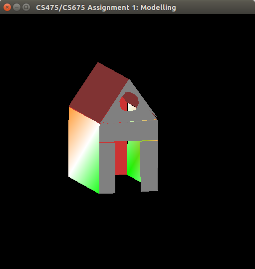
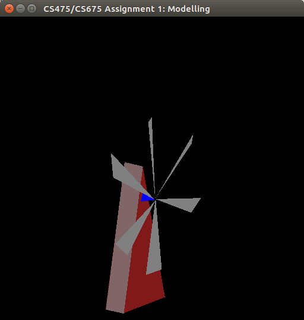
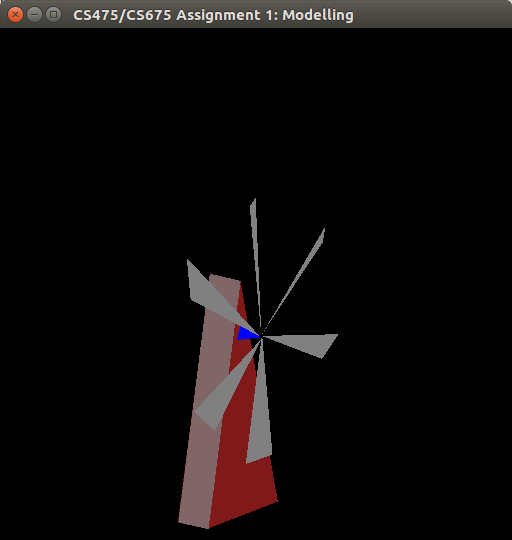
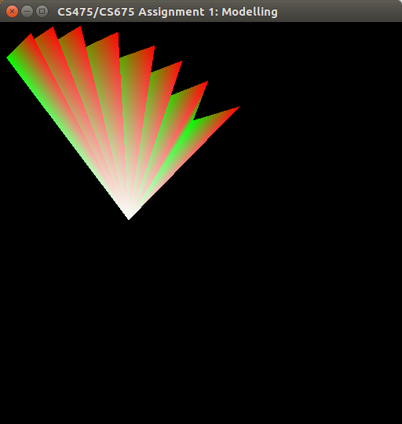
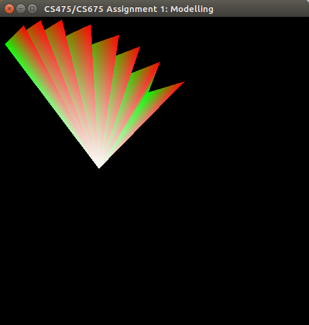

Open the folder Assignment1 (where makefile is present) in terminal and run the command "make"" to compile the project. To open the project open the executable using the command "./modelling". Details about how to create and view model are given in respective modes
There are two modes as per requirement- Modelling Mode and Inspection Mode . By pressing 'M', we can activate the modelling mode where object can be modelled using various points and colors. In Inspection Mode which is activated by pressing 'I', translation and rotation are implemented as per requirement for viewing the model. Details are given in further sections.
Default mode is the inspection mode
The xy plane is the visible plane with default z coordinate set to 0 and color set to "0.5, 0.5, 0.5" .
We can change the z coordinate, color by pressing keys as follows:
To draw any model, break the model into polygons which may even be 3D polygons and draw polygons one by one
Select the points one by one to draw a polygon and then press "H" to finish a polygon and start a new one
While selecting the points you can move around the z-axis (although this won't be visible in modelling mode) and change the colors of the vertices using the controls mentioned above
Anytime during drawing, you can change the mode to see how the model will look from different angles
The algorithm for sub-dividing the polygon into triangles is such that each of triangles will have 0th point as one vertex and base will be consecutive points. It is explained in the diagram below:

The inspection mode allows translation, rotation and shifting of centroid as follows:
Controls:Use the above keys to rotate(around its own centroid) or translate the object as you wish.
Current window needs to be terminal while entering filenames, and the OpenGL window when using above controls
Here are some screenshots of the final models created using this project
File: myhut.raw

File: windmill.raw

 

File: fan.raw

 
